🖥️ Main interface tips
When using the default backgrounds, hover your mouse on the background credits at the bottom left corner of DashX to get the EXIF info of the photo (when available).
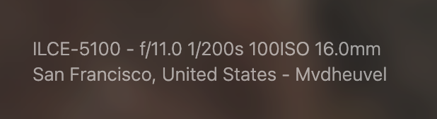
Context menu
DashX integrates a custom right click context menu on most of its interface. Use it
to add new quick links, access widget settings easily and control the background. Note
that you can still access the default context menu if you press alt + right
click.
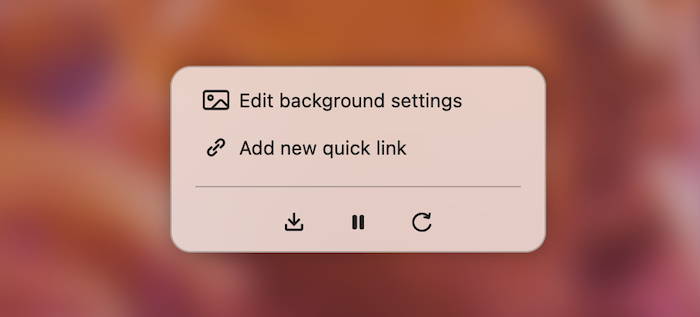
⚙️ General settings tips
Accessing the settings panel
There are two ways you can access the settings of DashX:
- Click on the ⚙️ icon in the bottom right corner.
- Hit the
esckey of your keyboard (while focused on the page). - Right click on the page to access the context menu
Show all settings
DashX has lots of settings. To make it easier for newcomers, we hide most of the more
advanced ones by default. You can enable them by toggling
Hide settings icon
When toggling the
📌 Tab appearance
You can customize the text and icon (called favicon) your browser uses for DashX. Text is limited to 80 characters, and icons can only be emojis.
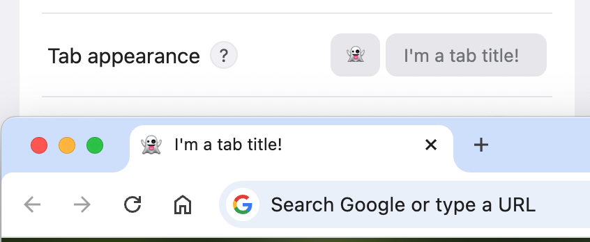
The emoji option might be limited by your browser:
- Firefox has imperfect scaling/alignments (GitHub issue).
- Microsoft Edge & Safari don't support it at all.
Here is how you can write emojis:
- Windows:
WIN + .(Windows Key + dot) - macOS:
CTRL + CMD + Space - You can also copy and paste them from the Internet: unicode.org/emoji/charts/full-emoji-list.
🖼️ Backgrounds
DashX lets you fully customize your new tab experience with beautiful and dynamic backgrounds. Whether you prefer curated photos, immersive videos, or your own local files, there are plenty of options to make it feel personal.
Images
DashX offers several ways to customize your background with beautiful images. Here's how it works!
DashX Daylight
By default, DashX uses the Unsplash API to fetch its backgrounds from a feature we call DashX Daylight. We select them manually and store them in four different collections that change according to the time of the day:
- One for the morning (2h around sunrise).
- One for the day.
- One for the evening (2h around sunset).
- And one for the night.
Unsplash Collections
You can use any collection on Unsplash as a background source in DashX. This allows you to carefully curate your own images from Unsplash. To do so:
- Find one you like by going to unsplash.com, search for a subject and go to the Collections tab.
-
Once you've clicked on the collection you want, check out its URL. What you want is
the ID, which is the string of random letters and numbers. For example, if your
collection's URL is
https://unsplash.com/collections/2170139/wolfdogs-of-unsplash, the ID is2170139. -
Head back to DashX and after having checked
Show all settings at the top of the settings panel, paste the ID in theUnsplash collection field. You can add multiple collections by separating them with a comma.
Unsplash Search
If you have a theme in mind, you can use the Unsplash Search feature and let Unsplash do the work for you: just type in a keyword and it will start fetching backgrounds related to that keyword. You can even set several of them by separating them with a comma.
Videos
Thanks to Pixabay's free video library, DashX lets you set videos as your backgrounds. They're fun, dynamic, and bring your homepage to life in a way static images can't.
However, videos can be more demanding on your device. They require more processing power, which can slow things down and drain battery faster. Also, since video files are larger than images, a fast internet connection is recommended for a smooth experience.
Additionally, we try to go out of our way to never integrate AI generated content to our background collections. If anything AI were to slip through, be sure to tell us about it via email and we'll gladly remove it.
DashX Daylight
Just like with images, DashX also offers curated video backgrounds that change with the time of day.
Pixabay Search
Similar to Unsplash Search, you can enter keywords in DashX to fetch related videos from Pixabay’s library.
Local files
The local files option allows you to easily set images or videos from your device to DashX.
Click
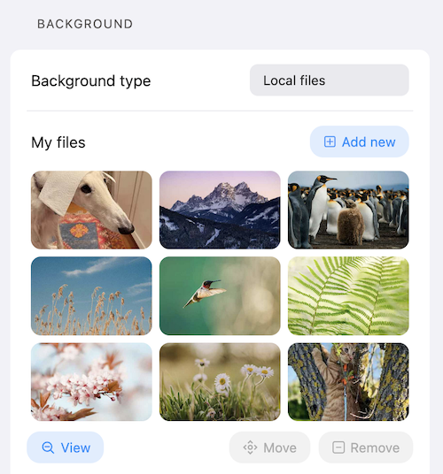
By selecting an image/video and clicking
A drawback of local files is that they can't be synced between devices; this is a technical limit and security browsers have set up when it comes to extensions.
URLs
The URLs option is another way to import your own images into DashX, but instead of having them on your computer, you source them from a distant server.
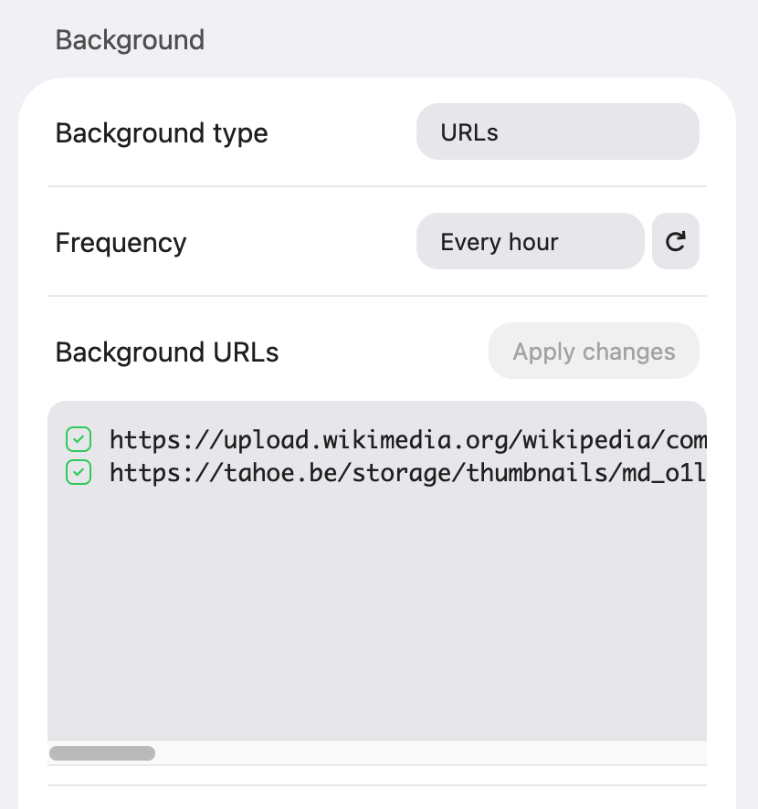
This is great if you want more flexibility. If you're a power user, you could do something like setting up a dynamic URL where the backgrounds change according to your exact preferences, such as certain times of the day or month.
Additionaly, the background URLs options has another great perk over Local files: it can be synced across browsers.
Solid color
The solid color option allows you to choose a specific color for your background if you like to keep things especially minimalist.
Texture overlay
Textures are overlays on top of any background. There are many types you can try, and they will typically look better over a blurred background or a solid color.
Most textures can be edited through their color, opacity and density to get to the perfect result.
Fade in time
You can specify the speed at which the backgrounds fade in when you open a new tab. Color backgrounds are always at 0ms. Reducing the fade in time to 0 will make the new tab page flicker, because the background image needs to load.
🔗 Quick Links
Quick links are a way to easily manage the websites you visit regularly.
Basic usage
To add Quick Links, right-click on the page or open the Quick Links section in the settings. They are editable if you right click on them (or long press on mobile), which allows you to change their titles, URLs, icons and delete them.
You can easily reorder your links by drag and dropping them, just like you would do on a phone. Additionally, dropping a link on another link will create a folder that contains them both. You can also edit that folder via right click.
💡 Tip: A mouse middleclick on a folder will open all its contained links at once.
Importing your links
DashX integrates a way to import the existing links from your browser. To access it,
click the
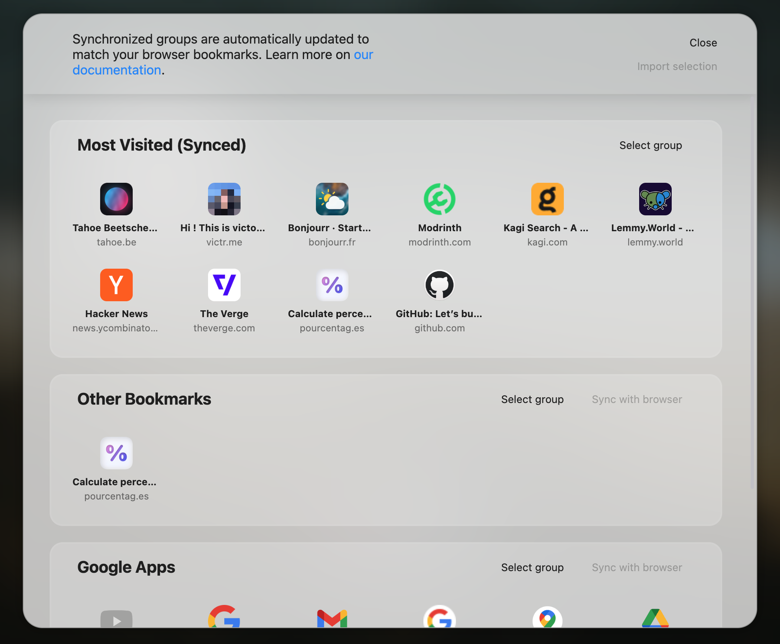
You can select one or multiple groups, and then import them.
Syncing
Some importable groups, such as bookmarks, can be synced with your browser if you decide
to click on
Some groups (like the "Most visited" on Chrome) are only importable while synced and will get updated in DashX whenever your browser decides to do so.
Google Apps
If you use Chrome, DashX will offer you to import Google Apps as a way to replicate Chrome's default startpage's behaviour.
Link groups
You can organize your links with link groups, an optional feature you can enable in
settings. To add a group, hover to the right of the group titles until you see the +
icon. You can rename and delete groups by right clicking on them. Deleting a group will
delete all the links it contains.
Just like with folders, you can:
- Drag and drop links from group to group.
- Drag and drop groups to reorder them.
- Rename a group by right clicking it.
You can pin groups by selecting
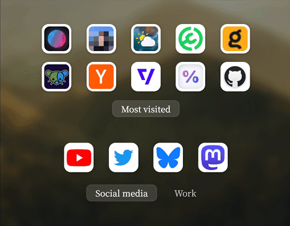
Link icons
You can configure your links' icons from three different modes.
Website favicon (default)
In the default mode, icons are automatically retrieved from our homemade service favicon-fetcher. If you find that a website is missing its icon, you can create an issue on GitHub or send us an email, and we will do our best to fix it.
Local files
Easily customize you link icons by importing them directly from your computer. Most image file formats are allowed, such as JPG, PNG, WebP, (non animated) GIF, and SVG.
Distant URL
This mode allows you to set a distant URL to any image file you want on the Internet. This URL can be:
- A distant URL:
https://en.wikipedia.org/favicon.ico. - A locally hosted URL:
http://127.0.0.1:4321/favicon.ico. -
A Data URI smaller than 8kb:
data:image/gif;base64,R0lGOD...AA7.
But not a:
- File path:
file:///Users/Me/Pictures/flowers.png.
Cache policy
Icons from favicon-fetcher are stored in the browser cache for a year. As long as the browser cache is not cleared, icons are not fetched (or updated) by the page. However, if the browser cache is often cleared or storage space is limited on your device, icons will have to be fetched from our service again.
Icons you add manually from a distant URL will have a different cache policy that we are not in control of, which might cause the icon to be fetched often or even every time.
⚠️ Notice: as a security measure, local paths like file://, browser
settings links like about:config or chrome://extensions can't be
added. However,
localhost: links will work just fine.
🕰️ Time and date
The analog clock feature has many options you can play around with and get to really cool styles.
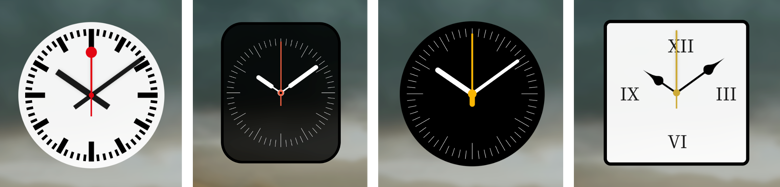
Some things to know:
- Clicking the 🌙/☀️ icons on the sliders will switch from black to white.
- The analog clock background is blurred when its opacity is above 0.
World clocks
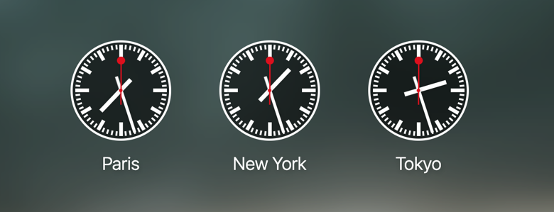
🌤️ Weather
Precise geolocation needs access to your device's GPS. Some browsers or systems might not allow access based on its privacy setting. macOS / Safari often causes problems.
If there are multiple cities with the same name in your country, it might cause an issue. A good trick to fix this is to choose the name of the closest city with a unique name.
DashX doesn't have a "Refresh weather" option yet, but you can still do it by manually toggling between units (Celsius → Fahrenheit → Celsius).
Detailed weather
⚠️ We are in no way affiliated with MSN, Accuweather, Yahoo!, or Windy.com. These websites offer reports from different data provider, hence the choices.
🔎 Search bar
Suggestions
Suggestions are provided by our own API. You can learn all about it and its source code here.
Custom search engine
There are many search engines available by default in DashX, and you can even add
others if needed. To do so, select %s.
For example, if you search "coffee" on YouTube, you'll see that the URL will be
https://www.youtube.com/results?search_query=coffee.
In this case, you just need to replace coffee with %s,
giving you this result: https://www.youtube.com/results?search_query=%s.
Paste it in the input and you'll now be able to use the corresponding search engine from DashX.
This method will work with the vast majority of search engines, making DashX compatible with almost all of them.
🗣 Quotes
The quotes widget can fetch quotes from multiple sources:
- By default, our open source quotes API available in multiple languages. These are general motivational or inspirational quotes that the community can manage through pull requests.
- The InspiroBot API, an AI that generates seemingly inspirational quotes, but with a humorous twist. It parodies traditional motivational quotes from the point of view of an AI. Although we are not affiliated with InspiroBot, we've always found this service fun and thought it'd be nice to have it in DashX. It is important to note that it's at least 10 years old and has nothing to do with the recent generative AI trend.
- The Kaamelott API, quotes from a french comedy TV show. Only available in French.
- Stoic quotes that reflect the Stoicism philosophy.
- Hitokoto, japanese inspirational quotes.
- Custom, add your own quotes directly from DashX's UI.
- URL, add quotes from a distant CSV file.
Importing your own quotes
There are two ways you can import your own quotes: directly from DashX, or from a distant URL. In both cases, here is the formatting your quotes need to adopt:
Author, Your quote.Author, Your second quote.With the custom quotes option
Once the custom quotes option is selected, you can simply add quotes to it by respecting the formatting shown above.
This option is limited to 8kB of text, which is about 50 regularly sized quotes. This is because DashX uses storage.sync to store data, and each object is limited to 8kB. If you need more quotes, we advise using the URL option instead.
With the URL option (CSV file)
Select the URL option to link DashX to the direct URL of a CSV file that contains all your quotes.
The easiest way to do this is to use GitHub Gist, a service that allows you to very easily create and host a file:
- Create an account on GitHub if you don't already have one, and log in.
- Head to the GitHub Gist page.
- Give your file a description, like "My DashX quotes".
-
Give it a filename, like
DashX_quotes.csv. It can be anything as long as it ends with.csv. - Start typing your quotes with the formatting shown above (you'll be able to edit them later if you want).
-
Once done, you can hit the
Create secret gist button. It will save the file and show you what it looks like as a table. -
Click the
Raw button, copy the URL of the page that opens and paste it in the URL input of DashX. Voilà!
⏱️ Pomodoro timer
The Pomodoro widget allows you to use the Pomodoro Technique in DashX, a time management method designed to help you work more efficiently.
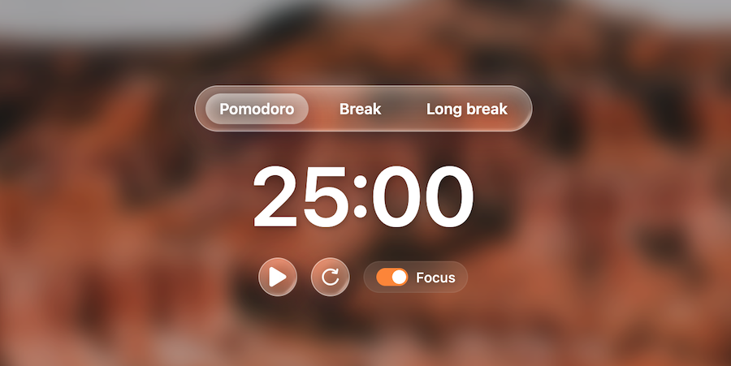
The widget shall be used as per the original technique:
- Decide on the task to be done.
- Set the Pomodoro timer (typically for 25 minutes).
- Work on the task.
- End work when the timer rings and take a short break (typically 5–10 minutes).
- Go back to Step 2 and repeat until you complete four pomodori.
- After four pomodori are done, take a long break (typically 20 to 30 minutes) instead of a short break. Once the long break is finished, return to step 2.
The Pomodoro widget keeps track of time even if you close DashX (although won't ring
if no DashX tab is open). Use the
📚 Fonts
DashX gets its fonts from Fontsource. If you want to see previews of the fonts DashX offers, please visit fontsource.org.
📄 Page layouts
There are 3 different page layouts to choose from: single, double and triple column. Each layout saves the position and alignment of your widgets independently.
These options only affect the current layout:
- Widget toggle (enable switches)
- All options in grid toolbox
- Reset layout
💾 Settings management
DashX allows you to export all your settings into a file. You can use this feature if you want to save them or share them to someone. You will in turn be able to import said settings into any instance of DashX.
To do so, simply go to the bottom of your settings pannel, then click the
The settings include everything you've ever modified in DashX, except for the local files you've uploaded (backgrounds and icons).
Synchronization type
DashX has multiple ways to share its settings between instances. In all cases, all settings will be synchronised except local backgrounds. For now, only the native browser syncing is automatic.
Browser
DashX is by default configured to use the automatic syncing features of both Firefox and Chrome. If you log into your Mozilla/Google account on your browser and have syncing enabled in your browser, DashX should get synchronised to other instances of the same browser on other devices.
Github Gist (cross browser)
DashX also has a way to synchronise its data accross multiple browsers thanks to GitHub Gist (for example, if you use Chrome and Firefox at the same time).
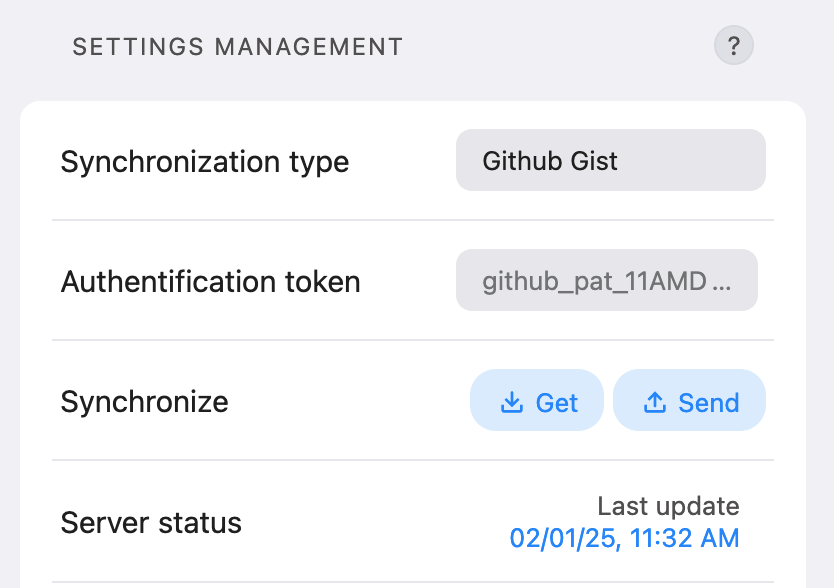
Here's a step by step guide on how to configure it:
- Select "GitHub Gist" in
Synchronization type . - Log in to GitHub and create an authentification token by following this guide on docs.github.com, or by following the steps shown below:
-
Go back to DashX and paste your token in the
Authentification token input. Paste that token in as many DashX instances as you need to synchronize. -
From there, you can either use the
Get button to download your settings from the server, or theSend button to upload them. TheServer status area helps you by showing when the last upload was made.
DashX is not affiliated with GitHub, and no connections to api.github.com are made
until you select this option AND enter a valid token. More details on our privacy
page.
Distant URL
This option is essentially the same as importing a settings file from your computer, except you will do it from a distant URL. As it removes the step of having to transfer the settings file to every single device, this could be handy for power users who might need to set up many instances of DashX at once.
Simply host your settings file somewhere (pastebin.com can be a
good choice), enter its direct URL in DashX and click the
⌨️ Keybindings
| Keys | Action |
|---|---|
| Escape | Opens / closes settings |
| E (focused on link) | Edits links |